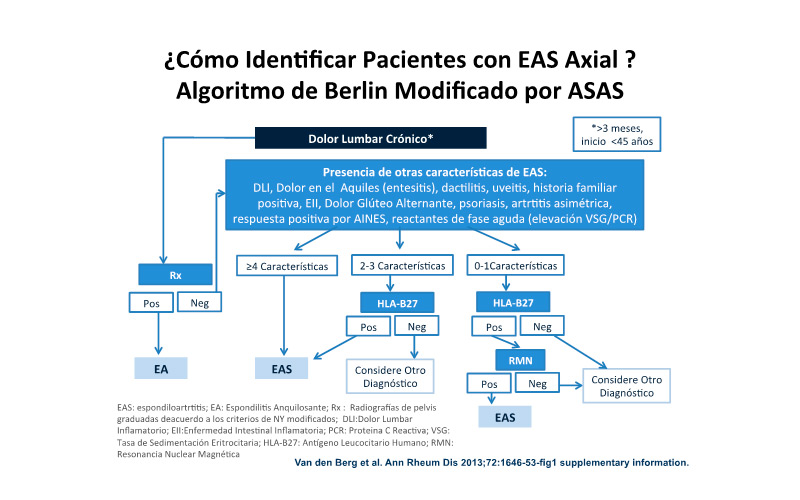
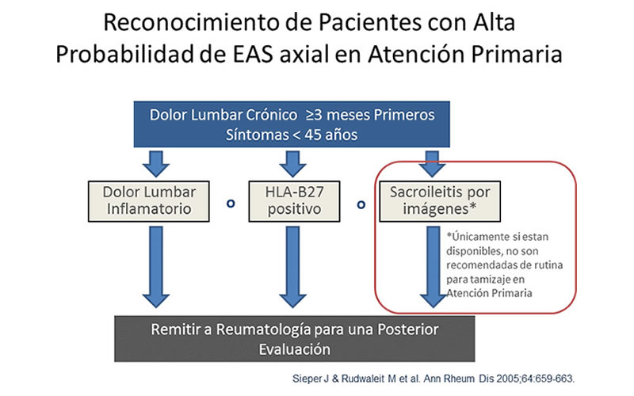
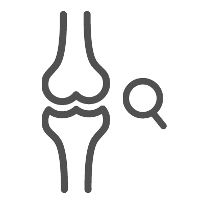

<div class="pages">
	<div data-page="projects" class="page no-toolbar no-navbar">
		<div class="page-content">
			<div class="navbarpages">
				<div class="nav_left_logo"><a href="index.html"></a></div>
				<div class="nav_right_button"><a href="menu.html"></a><a href="#" class="back" data-force="true"></a></div>
			</div>
			<div id="pages_maincontent">
				<h2 class="page_title">Enfoque clínico del paciente con dolor lumbar</h2>
				<div class="page_content">
					<blockquote>Definición</blockquote>
					
					<!---->
					
					<p>La lumbalgia o lumbago es él termino con el que identificamos el dolor en la parte baja de la espalda, en la zona lumbar, causado por trastornos relacionados con las vértebras lumbares y las estructuras de los tejidos blandos como músculos, ligamentos, nervios y discos intervertebrales. La lumbalgia constituye una patología muy frecuente. Entre un 60-80% de la población la experimenta en algún momento de su vida. Según el modo de presentación, puede tratarse de un proceso agudo o crónico (&gt; 12 semanas) y, según las características del dolor, mecánico o inflamatorio. </p>
					<p>Debemos indagar más sobre el origen de la lumbalgia cuando nos encontremos ante estas situaciones:</p>
					<ol class="simple_list">
						<li>El primer episodio ocurre antes de los 20 años o después de los 50.</li>
						<li>Dolor de características no mecánicas.</li>
						<li>Fiebre.</li>
						<li>Historia previa de cáncer.</li>
						<li>Tratamiento con esteroides.</li>
						<li>Inmunodepresión.</li>
						<li>Pérdida de peso.</li>
						<li>Síntomas o signos de déficit neurológico.</li>
						<li>Traumatismo previo.</li>
					</ol>
					<p>Clasificar a los pacientes según tengan lumbalgia simple o irradiada o lumbalgia crónica puede ser el punto de partida para decidir el manejo y las pruebas de estudio indicadas </p>
					<h3>Diferencias entre el dolor lumbar mecánico y el dolor lumbar inflamatorio</h3>
					<ul class="responsive_table">
						<li class="table_row">
							<div class="table_section_30">&nbsp;</div>
							<div class="table_section_30">Inflamatorio</div>
							<div class="table_section_30">Mecánico</div>
						</li>
						<li class="table_row">
							<div class="table_section_30">Edad</div>
							<div class="table_section_30">< 40 años en especial en espondiloartrtitis </div>
							<div class="table_section_30">15- 90 años</div>
						</li>
						<li class="table_row">
							<div class="table_section_30">Inicio</div>
							<div class="table_section_30">Insidioso</div>
							<div class="table_section_30">Agudo</div>
						</li>
						<li class="table_row">
							<div class="table_section_30">Alteración del sueño</div>
							<div class="table_section_30">Alteración del sueño</div>
							<div class="table_section_30">+/-</div>
						</li>
						<li class="table_row">
							<div class="table_section_30">Rigidez Matutina</div>
							<div class="table_section_30">+++</div>
							<div class="table_section_30">+</div>
						</li>
						<li class="table_row">
							<div class="table_section_30">Ejercicio Físico</div>
							<div class="table_section_30">Mejora</div>
							<div class="table_section_30">Empeora</div>
						</li>
						<li class="table_row">
							<div class="table_section_30">Descanso</div>
							<div class="table_section_30">Empeora</div>
							<div class="table_section_30">Mejora</div>
						</li>
						<li class="table_row">
							<div class="table_section_30">Irradiación del dolor</div>
							<div class="table_section_30">Difuso</div>
							<div class="table_section_30">Anatómico (L5 –S1)</div>
						</li>
						<li class="table_row">
							<div class="table_section_30">Síntomas sensitivos/motores</div>
							<div class="table_section_30">-</div>
							<div class="table_section_30">+</div>
						</li>
						<li class="table_row">
							<div class="table_section_30">Afectación de otros órganos</div>
							<div class="table_section_30">Psoriasis, alteraciones mucosas, genitales, gastrointestinales, fiebre, deterioro del estado general </div>
							<div class="table_section_30">-</div>
						</li>
						<li class="table_row">
							<div class="table_section_30">Laboratorios</div>
							<div class="table_section_30">Aumento de reactantes de fase aguda, HLA-B27 en espondiloartritis</div>
							<div class="table_section_30">No suele alterarse</div>
						</li>
						<li class="table_row">
							<div class="table_section_30">Radiografías</div>
							<div class="table_section_30">Sacroileitis, sindesmofitos, cuadratura vertebral</div>
							<div class="table_section_30">Espondiloartrosis, Estenosis de canal, Lumbalgia crónica inespecífica</div>
						</li>
						<li class="table_row">
							<div class="table_section_30">Sexo</div>
							<div class="table_section_30">Predominio en varones en las espondiloartropatías</div>
							<div class="table_section_30">Indiferente</div>
						</li>
					</ul>
					<p>El dolor lumbar inflamatorio es un concepto relativamente reciente y bien aceptado cuya definición precisa se mantiene aún dispersa. </p>
					<blockquote>Lumbalgia inflamatoria</blockquote>
					<p>El dolor lumbar inflamatorio se define como insidioso, profundo, difícil de localizar, cambiante, con unas características que lo permiten distinguir del dolor lumbar de otros orígenes.</p>
					<p>Los siguientes síntomas son altamente sugestivos de dolor lumbar inflamatorio:</p>
					<ol class="simple_list">
						<li>Inicio anterior a los 40 años.</li>
						<li>Comienzo insidioso.</li>
						<li>Dolor lumbar nocturno.</li>
						<li>Duración mayor de 3 meses.</li>
						<li>Presencia de rigidez matutina superior a 30 minutos.</li>
						<li>Mejoría con el ejercicio.</li>
						<li>El dolor no se alivia con el reposo.</li>
						<li>Mejoría con el consumo de antiinflamatorios no esteroideos (AINE).</li>
						<li>Obliga al paciente a levantarse de la cama durante la noche.</li>
					</ol>
					<p>Una reciente modificación de la definición de lumbalgia inflamatoria (LI) propuesta por el ASAS (Grupo Internacional para la Evaluación de las Espondiloartritis), plantea las siguientes características (lumbalgia crónica, comienzo antes de los 45 años): </p>
					<ol class="simple_list">
						<li>Rigidez matinal superior a 30 minutos.</li>
						<li>Mejoría con el ejercicio, pero no con el reposo.</li>
						<li>Despertar en la segunda parte de la noche por el dolor.</li>
						<li>Dolor en nalga alternante.</li>
					</ol>
					<p>Sabemos que la LI es el síntoma guía más importante de la  afección axial de las espondiloartropatías, y está presente en la gran mayoría de los pacientes con EA y aproximadamente en el 70% de todas las espondiloartropatías.</p>
					<p>Si a esta sintomatología clínica inflamatoria se añade fiebre se deberá descartar una osteomielitis vertebral bacteriana, tuberculosa o fúngica. El antecedente o la sospecha de neoplasia implicarán excluir metástasis vertebrales o paravertebrales, carcinomatosis meníngea o linfoma. Si se ha realizado un tratamiento previo con anticoagulantes se deberá sospechar la presencia de hemorragia retroperitoneal. Finalmente, cuando el dolor lumbar se vuelve constante y claramente progresivo, sin mejoría con el reposo, y los exámenes de “rutina” son normales deberemos considerar la existencia de tumores primitivos medulares u óseos. 
						Descartados todos estos procesos, nos plantearemos el diagnóstico diferencial de las causas más habituales de lumbalgia de origen inflamatorio.</p>
					<p>En cuanto a las pruebas complementarias de imagen útiles para el diagnóstico se encuentran:</p>
					<ol class="simple_list">
						<li>Radiografía de sacroilíacas anteroposterior (AP) y radiografía AP y lateral de columna lumbosacra.</li>
						<li><strong>Gammagrafía de sacroilíacas:</strong> Es una técnica sensible para detectar la inflamación pero poco específica. Será también normal en pacientes que no tengan inflamación activa.</li>
						<li><strong>Tomografía computadorizada (TC) de sacroilíacas:</strong> Detecta pequeñas erosiones de la articulación sacroilíaca in- dependientemente de que haya o no inflamación activa.</li>
						<li><strong>Resonancia magnética (RM):</strong> Detecta el edema óseo antes de que se produzcan lesiones radiológicas; sin embargo, es una prueba de menor disponibilidad pero que parece ser útil para valorar la actividad inflamatoria de la enfermedad.</li>
						<li><strong>Ecografía:</strong> Detecta el daño estructural y procesos inflamatorios activos en las articulaciones periféricas, con una sensibilidad y especificidad muy superior a la exploración clínica. Es una técnica todavía en proceso de validación, pero que probablemente por su mayor disponibilidad tendrá un desarrollo importante en los próximos años</li>
					</ol>
					<h3>Causas de dolor lumbar inflamatorio</h3>
					<ol>
						<li>Espondilitis Anquilosante</li>
						<li>Otras Espondiloartropatías
							<ul>
								<li>Artritis Reactiva</li>
								<li>Artritis Psoriásica</li>
								<li>Artrtitis de Enfermedad Inflamatoria Intestinal  (artrtitis  enteropáticas )
									<ul>
										<li>Artritis de la enfermeda de Crohn</li>
										<li>Artritis de la Colitis Ulcerosa</li>
									</ul>
								</li>
							</ul>
						</li>
						<li>Espondilitis Anquilosante de comienzo juvenil</li>
						<li>Espondiloartropatía axial no radiológica</li>
						<li>Otras
							<ul>
								<li>Sindrome SAPHO</li>
								<li>Enfermeda de Whipple</li>
								<li>Enfermeda de Behcet</li>
								<li>Hiperparatiroidismo</li>
							</ul>
						</li>
					</ol>
					<p>Muchos pacientes tienen dolor lumbar inflamatorio sin que aparezca sacroilitis radiológica como definida por los criterios de Nueva York modificados. Además, muchos de estos pacientes pueden tener edema óseo detectable por resonancia magnética, esto es, inflamación en las articulaciones sacroiliacas aunque no tengan sacroilitis radiológica. Estos pacientes no pueden clasificarse como espondilitis anquilosante clásica y, sin embargo, pueden tener una carga similar de enfermedad en términos de actividad e incapacidad funcional aunque no en daño estructural. Inicialmente. El reto es, pues, disponer de herramientas que permitan diagnosticar y clasificar a este grupo de pacientes y evitar por tanto el retraso diagnóstico que tradicionalmente se describe para los pacientes con espondilitis anquilosante. Precisamente, con este fin se desarrollaron los criterios ASAS para clasificación de pacientes con espondiloartritis axial.</p>
					<p>Es importante anotar aquí sin embargo, que la existencia de estos criterios junto con diseñados para espondiloartritis periférica proporciona las herramientas necesarias para clasificar a los pacientes con espondiloartritis en 2 grandes grupos según su afectación predominante axial o periférica. Y dentro de la espondiloartriits axial la nomenclatura más actual distingue entre la llamada espondiloartritis axial no radiológica (pacientes que cumplen criterios ASAS para enfermedad axial pero no criterios de Nueva York modificados para espondilitis anquilosante porque no tiene sacroilitis radiológica de acuerdo a estos criterios) y pacientes con espondilitis anquilosante (los cuales sí cumplen los criterios de Nueva York modificados). Dentro de la espondilitis anquilosante, la tendencia actual es distinguir entre aquellos pacientes con afectación radiológica limitada a sacroiliacas (esto es, sin presencia clara de afectación espinal, es decir, de sindesmofitos) y aquellos otros con afectación espinal evidente definida por la presencia de sindesmofitos.</p>
					<p>Inicialmente, lo que hoy conocemos como espondiloartritis axial no radiológica se entendía como una fase pre-radiológica de la espondilitis anquilosante, es decir como un estadío previo a la situación definida por los criterios de Nueva York modificados. La nomenclatura actual incorpora un matiz diferente, ya que, aunque formando parte del espectro de la enfermedad, no en todos los casos se produce la evolución de la fase no radiológica a la radiológica. Es decir, no todos los pacientes con espondiloartriits axial no radiológica van evolucionar a espondilitis anquilosante y, aún dentro de aquellos que llegan a cumplir los criterios de Nueva York modificados, no todos evolucionan hacia la aparición de sindesmofitos y anquilosis vertebral.</p>
					
					<blockquote>Criterios dolor dorso lumbar inflamatorio</blockquote>
					
					<h3>Criterios de dolor lumbar inflamatorio (CALIN) </h3>
					<p>Espondilitis Anquilosante n = 42; dolor lumbar mecánico  n=21</p>
					<ul>
						<li>Edad al inicio &lt; 40 años</li>
						<li>duración de el dolor lumbar &gt; 3 meses</li>
						<li>Inicio insidioso</li>
						<li>Rigidez matinal</li>
						<li>Mejoría tras el ejercicio</li>
					</ul>
					<p>Sensibilidad de los criterios: 95 %, Especificidad de los criterios: 76 %</p>
					<p>Dolor lumbar inflamatorio si 4 de 5 criterios están presentes</p>
					<p>REF. Calin A  et al . JAMA 1977 ;237:2613 -4</p>
					
					<h3>Criterios modificados (Berlín) para dolor lumbar inflamatorio.</h3>
					<p>Espondilitis Anquilosante n=101 ; dolor lumbar mecánico  n=112</p>
					<ul>
						<li>Rigidez matutina &gt;  30 minutos</li>
						<li>Mejoría con el ejercicio, no con el reposo</li>
						<li>Despertarse en la 2ª mitad de la noche por el dolor</li>
						<li>Dolor alternante en nalgas </li>
					</ul>
					<p>Sensibilidad :70, 3% ; Especificidad : 81,2%</p>
					<p>Dolor lumbar inflamatorio si 2 de 4 criterios están presentes</p>
					<p>Rudwaleit M et al. Arthritis Rheum 2006 ; 569-78</p>
					
					<h3>Criterios ASAS de dolor lumbar inflamatorio por expertos</h3>
					<p>Dolor lumbar crónico; n=648</p>
					<ul>
						<li>Edad al inicio &lt; 40 años</li>
						<li>Inicio insidioso</li>
						<li>mejoría con el ejercicio</li>
						<li>No mejoría con el reposo</li>
						<li>Dolor nocturno (con mejoría al levantarse)</li>
					</ul>
					<p>Sensibilidad : 79 % ; Especificidad : 72, 4 %</p>
					<p>Dolor lumbar inflamatorio si 4 de 5 criterios están presentes</p>
					<p>Sieper et al. Ann Rheum Dis . 2009; 68:784-788</p>
					
					<h3>El algoritmo de Berlín</h3>
					
					<p>Se trata de una aproximación muy interesante que cumple los requisitos exigibles a los criterios diagnósticos. Aplicable a pacientes individuales, ofrece una probabilidad diagnóstica cuantitativa en función de la presencia o ausencia de determinados rasgos característicos de espondiloartritis y permite el diagnóstico precoz. Es únicamente aplicable a espondiloartritis axial pero no sirve para pacientes con formas periférica o que empiezan con síntomas periféricos. De hecho, la población a la que puede aplicarse es la de pacientes con dolor lumbar crónico. Sus principales críticas radican en varios puntos: es poco factible en práctica clínica ya que precisa de cálculos matemáticos; las razones de probabilidad que se atribuyen a cada rasgo de espondiloartritis son discutibles ya que provienen de estudios realizados en pacientes con enfermedad ya establecida; y, por último parte del supuesto de que la prevalencia de espondiloartritis en pacientes menores de 45 años con dolor lumbar crónico es del 5%. Ese dato, tomado de un único estudio, no está suficientemente contrastado y, sin embargo, es la base del todo el modelo matemático.</p> 

					<p>Se han sugerido una variedad de algoritmos de diagnóstico, los cuales toman en cuenta las diversas manifestaciones que pueden estar presentes, así como el relativo “peso” de cada manifestación. El algoritmo más reciente propone una pirámide de diagnóstico para la espondiloartritis axial.( Rudwaleit M, Khan MA, Sieper J. The challenge of diagnosis and classification in early ankylosing spondylitis: do we need new criteria? Arthritis Rheum 2005;52:1000-8.).
 Se puede calcular la probabilidad de padecer espondiloartritis axial en relación con la presentación de los parámetros individuales de espondiloartritis, teniendo en cuenta que existe una prevalencia en la línea basal del 5% para la espondiloartritis axial en una población de pacientes con dolor de espalda crónico. Se pueden emplear la sensibilidad y la especificidad para calcular los cocientes de probabilidad (LRs, por sus siglas en inglés) de cada característica de la espondiloartritis axial.</p>
					<ul class="simple_list">
						<li>Dolor lumbar crónico</li>
						<li>Dolor espinal inflamatorio LR 3.7</li>
						<li>Dolor de talón (entesitis) LR 3.4</li>
						<li>Artritis periférica        LR 4.0</li>
						<li>Dactilitis                 LR 4.5</li>
						<li>Uveítis anterior aguda     LR 7.3</li>
						<li>Posible historia familiar  LR 6.4</li>
						<li>Respuesta positiva a AINES LR 5.1</li>
						<li>Elevacion de reactantes de fase aguda LR 2.5</li>
						<li>HLA-B27                    LR 9.0</li>
						<li>Resonancia magnética       LR 9.0</li>
						<li>Sacroilitis (Rayos X grado 3) LR 2.0</li>
						<li>Espondiloartritis Axial</li>
					</ul>
					
					<a rel="gallery-3" href="images/ab.jpg" title="Algoritmo de Berlín" class="swipebox"></a>
					
					<p>Con el fin de seguir ayudando a la identificación temprana de los pacientes con espondiloartritis axial, se han propuesto nuevos métodos de selección para los pacientes con dolor crónico de espalda baja. Esto es con el fin de ayudar a los médicos no especialistas de atención primaria en la diferenciación entre dolor inflamatorio de espalda, indicativo de sacroilitis, de la lumbalgia crónica que es más común. Un trabajo presentó un método eficaz de selección, para detectar pacientes con espondiloartritis axial no radiográfica dentro de la población general que padece dolor de espalda crónico</p>
					
					<a rel="gallery-3" href="images/eas_axial.jpg" title="Reconocimiento de pacientes con alta probabilidad de EAS axial en atencion primaria" class="swipebox"></a>

					
					<h3>Lecturas recomendadas</h3>
					<ol class="simple_list">
						<li>Sieper J, Braun J, Rudwaleit M, et al. Ankylosing spondylitis: an overview. Ann Rheum Dis 2002;61 Suppl 3:iii8-18.</li>
						<li>Rudwaleit M, Khan MA, Sieper J. The challenge of diagnosis and classifica- tion in early ankylosing spondylitis: do we need new criteria? Arthritis Rheum 2005;52:1000-8.</li>
						<li>Sieper J, Rudwaleit M. Early referral recommendations for ankylosing spondylitis (including pre-radiographic and radiographic forms) in primary care. Ann Rheum Dis 2005;64:659-63.</li>
						<li>Rudwaleit M, van der Heijde D, Khan MA, et al. How to diagnose axial spond- yloarthritis early. Ann Rheum Dis 2004;63:535-43.</li>
						<li>Lalkhen AG, McCluskey A. Clinical tests: sensitivity and specificity. Continuing Education in Anaesthesia, Critical Care & Pain 2008;8:221-223.</li>
						<li>Van den Berg R, De Hooge M, Rudwaleit M. ASAS modification of the Berlin algorithm for diagnosing axial spondyloarthritis : resultos from the SPondyloArthritis Caught Early (SPACE) – Cohort and from the Assessment of SpondyloArthritis international Sociaty  (ASA) – cohort. Ann Rheum Dis  2013 ; 72 : 1646-1653</li>
						<li>Rudwaleit M, van der Heijde D, Landewe R, et al. The development of As- sessment of SpondyloArthritis international Society classification criteria for axial spondyloarthritis (part II): validation and final selection. Ann Rheum Dis 2009;68:777-83.</li>
					</ol>
					
					<ul class="features_list">
						<li><a href="berlin.html"><span>Algoritmo de Berlín</span></a></li>
						<li><a href="cont_examen.html"><span>Ant - Examen clínico osteoarticular</span></a></li>
						<li><a href="cont_espondilitis.html"><span>Sig - Espondilitis anquilosante</span></a></li>
					</ul>
					<a href="menu.html" class="button_full">Menu principal</a>
					
				</div>
			</div>
		</div>
	</div>
</div>
